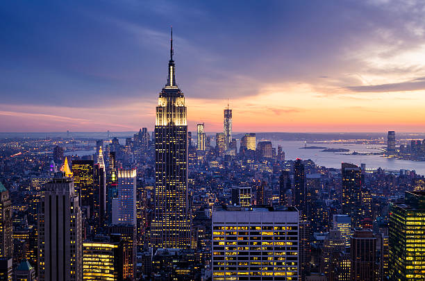

New York City: The Big Apple
New York City, often referred to as the Big Apple, is the most populous city in the United States. With a population exceeding 8 million, it's a global center for finance, culture, and art. New York City was incorporated in 1898 and is an iconic part of American history.
This metropolis is a diverse and vibrant urban area located in the southern region of New York State. Its average income level is notably higher than the state average due to its economic prominence.